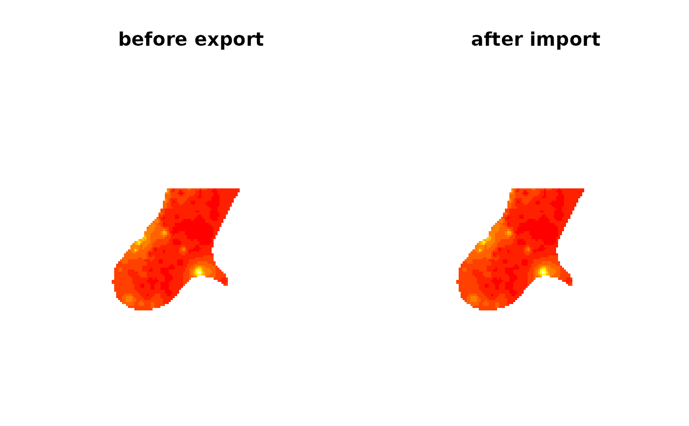

asciigrid.Rdread/write to/from ESRI asciigrid format; a fuzz factor has been added to writeAsciiGrid to force cell resolution to equality if the difference is less than the square root of machine precision
readAsciiGrid(fname, as.image = FALSE, plot.image = FALSE, colname = basename(fname), proj4string = CRS(as.character(NA)), dec=options()$OutDec) writeAsciiGrid(x, fname, attr = 1, na.value = -9999, dec=options()$OutDec, ...)
| fname | file name |
|---|---|
| as.image | logical; if TRUE, a list is returned, ready to be
shown with the |
| plot.image | logical; if TRUE, an image of the map is plotted |
| colname | alternative name for data column if not file basename |
| proj4string | A CRS object setting the projection arguments of the Spatial Grid returned |
| dec | decimal point character. This should be a character string containing just one single-byte character --- see note below. |
| x | object of class SpatialGridDataFrame |
| attr | attribute column; if missing, the first column is taken; a name or a column number may be given |
| na.value | numeric; value given to missing valued cells in the resulting map |
| ... | arguments passed to write.table, which is used to write the numeric data |
readAsciiGrid returns the grid map read; either as
an object of class SpatialGridDataFrame-class or, if
as.image is TRUE, as list with components x, y and z.
In ArcGIS 8, it was not in general necessary to set the dec argument; it is not necessary in a mixed environment with ArcView 3.2 (R writes and ArcView reads "."), but inter-operation with ArcGIS 9 requires care because the defaults used by ArcGIS seem to be misleading, and it may be necessary to override what appear to be platform defaults by setting the argument.
image, image
Edzer Pebesma, edzer.pebesma@uni-muenster.de
#> Object of class SpatialGridDataFrame #> Coordinates: #> min max #> [1,] 178400 181600 #> [2,] 329400 334000 #> Is projected: NA #> proj4string : [NA] #> Grid attributes: #> cellcentre.offset cellsize cells.dim #> 1 178420 40 80 #> 2 329420 40 115 #> Data attributes: #> test.ag #> Min. : 128.4 #> 1st Qu.: 293.2 #> Median : 371.4 #> Mean : 423.2 #> 3rd Qu.: 499.8 #> Max. :1805.8 #> NA's :6097#> Object of class SpatialPixelsDataFrame #> Coordinates: #> min max #> s1 178440 180960 #> s2 329600 332000 #> Is projected: NA #> proj4string : [NA] #> Number of points: 2216 #> Grid attributes: #> cellcentre.offset cellsize cells.dim #> 1 178420 40 80 #> 2 329420 40 115 #> Data attributes: #> test.ag #> Min. : 128.4 #> 1st Qu.: 286.2 #> Median : 363.7 #> Mean : 399.5 #> 3rd Qu.: 476.3 #> Max. :1621.8#> Object of class SpatialGridDataFrame #> Coordinates: #> min max #> [1,] 178400 181600 #> [2,] 329400 334000 #> Is projected: NA #> proj4string : [NA] #> Grid attributes: #> cellcentre.offset cellsize cells.dim #> 1 178420 40 80 #> 2 329420 40 115 #> Data attributes: #> test.ag #> Min. : 128.4 #> 1st Qu.: 286.2 #> Median : 363.7 #> Mean : 399.5 #> 3rd Qu.: 476.3 #> Max. :1621.8 #> NA's :6984tmpfl <- paste(tempdir(), "testS.ag", sep="/") writeAsciiGrid(xS, tmpfl) axS <- readAsciiGrid(tmpfl) opar <- par(mfrow=c(1,2)) image(xS, main="before export") image(axS, main="after import")